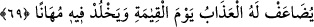
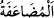
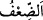
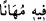
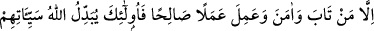
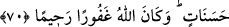
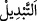
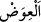

69. Kıyâmet günü azâbı kat kat artırılır ve onda (azabda) alçaltılmış olarak
devamlı kalır.
“Kıyâmet günü azâbı kat kat artırılır” Yâni onun azâbı vakit geçtikçe artar. Bu ise
onun günahların küfre katılıp ilave edilmesinden dolayıdır.
“__WORD__ artırmak, yâni biri iki etmek demektir. Nitekim Râğıb: “__WORD__ birbirlerine
eşit iki miktarın birini diğerine katmak, birleştirmektir.” der.
et-Te’vîlâtü’n-Necmiyye’de der ki: “Yâni o iki azâbla azâb görür. Biri cehennemin en
aşağı tabakalarındaki azâb, diğeri cennetlerin dereceleri ile Rahman’a kurbiyet
mertebelerini elden kaçırma azâbıdır.”
“ve onda” yâni o azâbda “alçaltılmış” hakîr kılınmış halde, cismânî ve rûhânî azâbı
birlikte çekerek ve kimse imdadına koşmayarak, hor ve îtibarsız “olarak devamlı
kalır.”
İbn Kesir ve Hafs “__WORD__ diye okumuşlardır. Bu, uyanık olmak ve sebebinden
kaçınmak üzere kat kat olan azâba dikkat çekmek içindir.
70. Ancak tevbe ve îman edip sâlih amel işleyenler başkadır; Allah onların
kötülüklerini iyiliklere çevirir. Allah çok bağışlayıcıdır, engin merhamet sâhibidir.
“Ancak” şirkten, adam öldürmekten ve zinâdan “tevbe ve îman edip” Allah’ın
vahdâniyetini tasdik edip îmânı tamamlamak için Allah’ın rızâsına uygun “sâlih amel
işleyenler başkadır”
Burada istisnâdan maksad bu amelleri işleyenlerin, tevbe etmedikçe zikredilen azâba
uğrayacaklarını haber vermektir. Azabın aslının isâbet edip etmemesine gelince, âyette
buna değenilmemiştir.
“Allah onların” tevbe, îman ve sâlih amel ile vasfedilenlerin dünyada müslüman
olarak işledikleri “kötülüklerini” kıyâmet gününde “iyiliklere çevirir.” Bu da her
kötülüğün karşılığına bir iyilik, her azâbın karşılığına bir sevap vermekle olur.
Râğıb der ki: “__WORD__ bir şeyi diğerinin yerine koymak demektir. Bu, birincisini verip
ikincisini elde etmek mânâsına gelen “__WORD__ kelimesinden daha geneldir. Yerine bedeli
getirilmese de değiştirme için “__WORD__ denir.”
Ebû Zer (r.a.)’dan rivâyet edildiğine göre Rasûlûllâh (s.a.) şöyle buyurmuştur:
“Kıyâmet günü bir kimse hesap için getirilir. Büyük günahları saklanarak “Küçük
günahlarını ona arzedin” denir ve “Sen şu günde şunu şunu yapmışsın.” diye